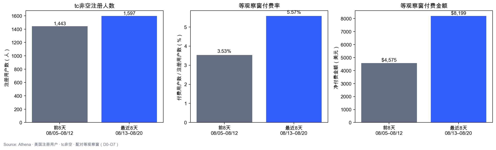
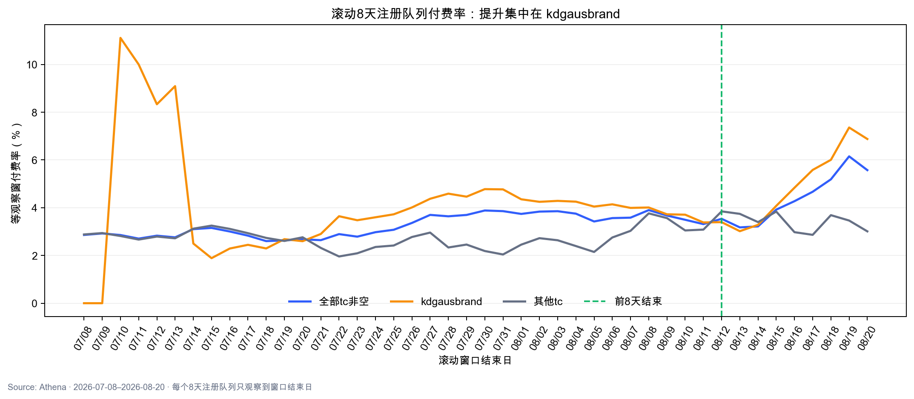
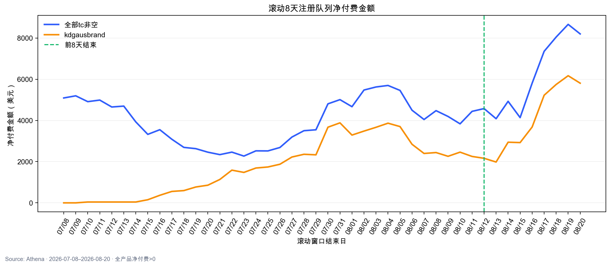
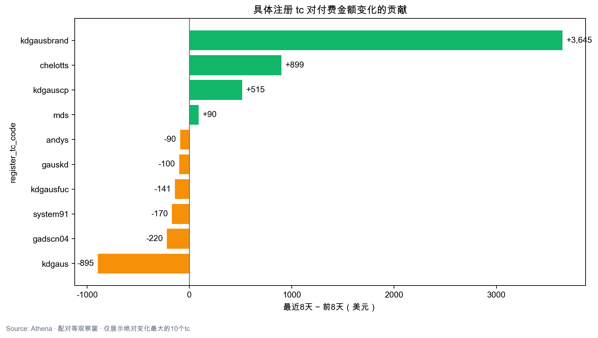

结论：最近8天付费率 3.53%→5.57%（p=0.0074），金额 $4,575→$8,199；提升几乎全部来自 kdgausbrand。可以判断广告大概率做对了，但具体是素材、关键词、受众还是落地页，需要结合 Google Ads 变更记录确认。
5.57%最近8天付费率（前期3.53%）
$8,199最近8天净付费（+79.2%）
84.2%新增付费人数由brand贡献
p=0.001kdgausbrand付费率差异
1. 公平比较后，现象成立
前8天注册者天然多出8天付费机会，因此使用配对等观察窗：两段第1天注册者均观察7天，随后依次降到D0。
| 指标 | 前8天 | 最近8天 | 变化 |
|---|---|---|---|
| 注册人数 | 1,443 | 1,597 | +10.7% |
| 付费人数 | 51 | 89 | +74.5% |
| 付费率 | 3.53% | 5.57% | +2.04pp |
| 净付费金额 | $4,574.56 | $8,198.63 | +79.2% |
| 注册ARPU | $3.17 | $5.13 | +61.9% |

2. 超出7月以来正常波动
截至8/12以前的36个滚动8天窗口，整体付费率范围为2.60%–3.90%；本期5.57%高于全部历史窗口。滚动窗口重叠，此处用于判断近期常态，正式显著性使用两期用户级检验。


3. 具体是谁带来的
| tc | 前8天 | 最近8天 | 判断 |
|---|---|---|---|
kdgausbrand | 854人 / 3.40% / $2,162 | 887人 / 6.88% / $5,808 | 核心驱动，p=0.001 |
kdgauscp | 69人 / 2.90% / $200 | 145人 / 7.59% / $715 | 放量+改善，p=0.18 |
| 排除brand后的全部tc | 589人 / 3.74% / $2,412 | 710人 / 3.94% / $2,391 | 基本不变，p=0.846 |

4. 广告做对了什么
提升集中于 Google campaign 23910979100、adgroup 197770302672、content 811882949516。该组合注册量仅+3.3%，付费率却从3.29%升至6.60%，金额从$2,059升至$5,137，说明关键不是单纯买更多量，而是同一广告组合的用户质量/转化改善。
kdgauscp 对应 campaign 23919487601，注册66→141、付费率3.03%→7.09%，是第二个积极信号，但样本暂不足以确认。
5. 排除偶然因素
- 整体付费率差异p=0.0074，brand单独p=0.0010。
- 排除brand后其他tc无显著改善，说明不是市场/产品共同抬升。
- 存在一笔chelotts $899.1，但单用户金额封顶$150后，总金额仍+64.7%，不是鲸鱼订单假象。
- 建议保持品牌广告组合稳定，再观察1–2个完整8天窗口；同时核对Google Ads在8/13附近的关键词、素材、受众、设备和落地页变更。